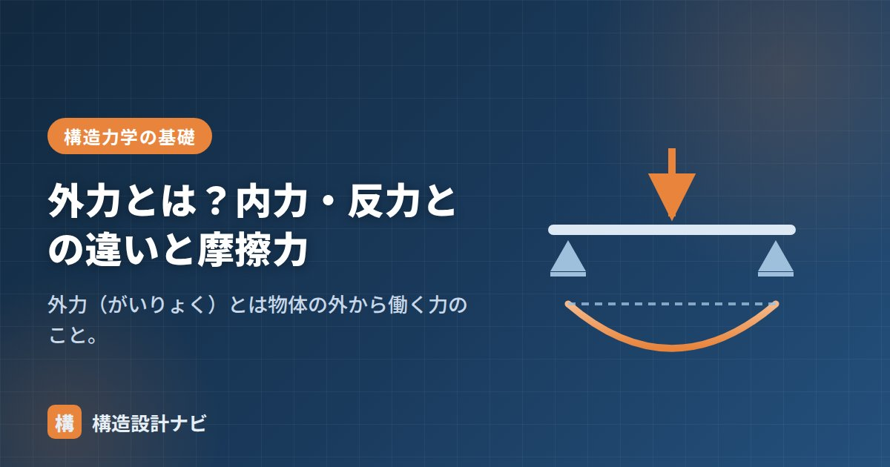

外力とは？内力・反力との違いと摩擦力

外力（がいりょく）とは、物体の外から働く力のことです。建物にとっては、自重・積載・地震・風などの荷重が外力にあたります。構造力学では、この外力に対して支点に生じる「反力」、部材内部に生じる「内力（応力）」を区別して考えることが出発点になります。この3つの力の関係を押さえると、反力計算や応力図（Q図・M図）の理解が一気に進みます。
- 外力＝物体の外から働く力。建物では荷重（自重・地震・風など）のこと。
- 外力と反力がつり合い、その力を部材内部に伝えるのが内力（応力）。
- 摩擦力も外力の一種。最大静止摩擦力は F＝μN で求める。
外力とは（建物に働く外力の種類）
外力は英語で external force といい、「注目している物体の外部から作用する力」を指します。建築の構造設計では、建物に働く外力を荷重と呼び、次のように分類して扱います。
| 分類 | 外力の例 | 作用の仕方 |
|---|---|---|
| 常時（長期） | 固定荷重（自重）・積載荷重（人・家具） | 常に鉛直方向に働く |
| 非常時（短期） | 地震力・風圧力・積雪荷重 | まれに水平・鉛直に働く |
| その他 | 土圧・水圧・温度変化による力 | 条件により作用 |
構造計算は「想定される外力を建物が安全に支えられるか」を確かめる作業ですから、外力の把握はすべての計算の入り口です。荷重の詳しい分類は「荷重とは」で解説しています。
外力・内力・反力の違い
構造力学で登場する3種類の力を整理すると、次のようになります。
| 種類 | 意味 | 例 |
|---|---|---|
| 外力 | 外から物体に働く力（荷重） | 自重・人・家具・地震・風・土圧 |
| 反力 | 支点が物体を支え返す力 | 柱脚・基礎の反力 |
| 内力（応力） | 外力に対して部材内部に生じる力 | 軸力・せん断力・曲げモーメント |
外力と反力がつり合い、その力を部材内部に伝えるのが内力、という関係です。たとえば梁の上に人が乗ると、人の重さ（外力）が梁に作用し、梁の両端の支点に反力が生じ、梁の内部には曲げモーメントやせん断力（内力）が発生します。この流れを図にしたものがQ図・M図です。
建築分野では部材内部の力（軸力・せん断力・曲げモーメント）を「応力」と呼びますが、材料力学でいう応力度（単位面積あたりの力、N/mm²）とは別物です。試験でも実務でも混同しやすいので、「応力＝内力」「応力度＝内力÷断面積」と区別して覚えましょう。
外力と力のつり合い
静止している建物では、外力と反力を含めたすべての力がつり合っています。つり合い条件は次の3式で表され、反力を求める際の基本になります。
「外力（荷重）をすべて書き出す → つり合い式を立てる → 反力を解く」という手順は、構造力学の問題を解くときの定石です。詳しくは「モーメントのつり合い」も参考にしてください。
摩擦力も外力（計算例つき）
接触面に生じる摩擦力も、物体の外から働く外力の一種です。最大静止摩擦力は、垂直抗力Nと摩擦係数μを使って次のように表します。
計算例：床の上に重さ100Nの箱が置かれ、床と箱の間の摩擦係数がμ＝0.4のとき、最大静止摩擦力はF＝0.4×100＝40Nです。つまり水平に40Nを超える力で押すと箱は滑り出します。垂直抗力Nは、水平な床では物体の重さと等しくなります。
よくある質問
Q1. 反力は外力に含まれますか？
力のつり合いを考えるときは、反力も「物体の外から作用する力」として外力と同列に扱います。ただし設計実務では、能動的に作用する荷重を外力、それを受けて生じる支点の力を反力、と呼び分けるのが一般的です。
Q2. 外力と応力はどちらを先に求めますか？
外力（荷重）を設定し、つり合いから反力を求め、その後に部材の内力（応力）を計算する、という順番です。応力から必要な部材断面を決めるのが構造設計の基本的な流れです。
若手に構造計算書をチェックさせると、「応力」と「応力度」の単位を取り違えて書いてしまうことが少なくありません。外力から反力、内力へと力が伝わる流れを図に描かせて説明すると、この混同はかなり減ります。
「作用力（作用反作用）」「反力」「応力（内力）」「力とは」をどうぞ。
まとめ
- 外力は外から物体に働く力。建物では荷重（自重・地震・風など）。
- 反力は支点が支え返す力、内力は部材内部に生じる力。
- 静止する建物では外力・反力がつり合う（ΣX＝ΣY＝ΣM＝0）。
- 摩擦力も外力の一種。最大静止摩擦力はF＝μN。